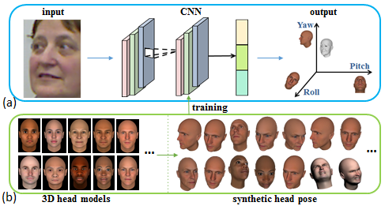

3D Head Pose Estimation with Convolutional Neural Network Trained on
Synthetic Images
Xiabing Liu, Wei Liang, Yumeng Wang, Shuyang Li, Mingtao Pei
Beijing Institute of Technology

The framework of our method. (a) The synthetic head poses data for CNN training are generated from head models. (b) For a given head image, a CNN model is used to estimate the head pose, which is represented by three angles: yaw, pitch and roll.
Abstract
In this paper, we propose a method to estimate head pose with convolutional neural network, which is trained on synthetic head images. We formulate head pose estimation as a regression problem. A convolutional neural network is trained to learn head features and solve the regression problem. To provide annotated head poses in the training process, we generate a realistic head pose dataset by rendering techniques, in which we consider the variation of gender, age, race and expression. Our dataset includes 74000 head poses rendered from 37 head models. For each head pose, RGB image and annotated pose parameters are given. We evaluate our method on both synthetic and real data. The experiments show that our method improves the accuracy of head pose estimation.
Publication
3D Head Pose Estimation with Convolutional Neural Network Trained on Synthetic Images
Xiabing Liu, Wei Liang, Yumeng Wang, Shuyang Li, and Mingtao Pei
2016 IEEE International Conference on Image Processing ( ICIP)
Paper
, Video
BibTex
@inproceedings {liang2015evaluating,
title=
{3D Head Pose Estimation with Convolutional Neural Network Trained on Synthetic Images},
author = {Liu, Xiabing and Liang, Wei and Wang, Yumeng and Li, Shuyang and Pei, Mingtao},
booktitle = {2016 IEEE International Conference on Image Processing (ICIP)},
year={2016},
page={1289-1293}
}

- 媒体计算与智能系统实验室
- Media Computing and Intelligent Systems Lab
Beijing Institute of Technology Copyright Address: 5 South Zhongguancun
Street, Haidian District, Beijing Postcode: 100081